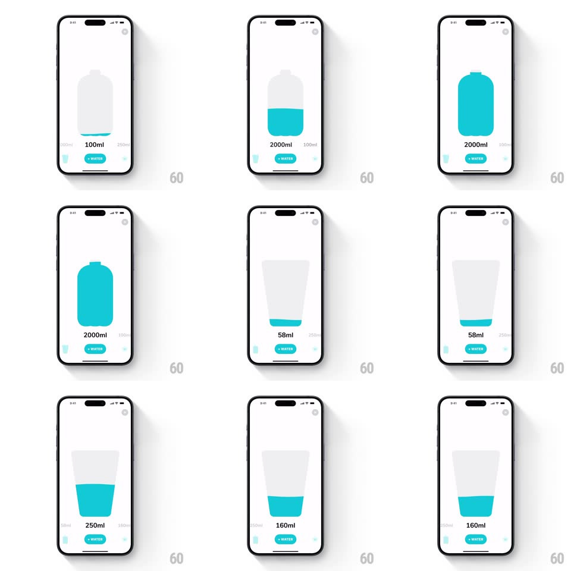

Media
Frame-by-frame

Rebuild this interaction 1:1: Waterllama's amount picker - scroll the horizontal value strip and the container illustration morphs between vessels (glass, bottle, jug) while its teal liquid level tracks the amount.

Rebuild this interaction 1:1: Waterllama's amount picker - scroll the horizontal value strip and the container illustration morphs between vessels (glass, bottle, jug) while its teal liquid level tracks the amount.
## Integration
Integration: stack-agnostic spec - springs given as stiffness/damping, timed motions as duration + curve; map every value to your framework and animation library of choice.
## Scene
A white screen: a large outlined vessel at center (small glass, tall bottle, wide cup) filled with teal liquid, the amount below it ("250ml"), flanked by dimmed neighbor values peeking at the edges ("100ml", "2000ml"). A teal "+ WATER" pill sits beneath.
## Motion spec
Pattern: value-scrubbed vessel morph.
- Horizontal drag: values scrub continuously (the strip moves 1:1), neighbor amounts sliding through the center spotlight; the centered value is large and black, neighbors small and gray (scale + opacity tween by distance from center).
- The vessel morphs with the value: crossing preset boundaries crossfades/stretches the container shape (glass to bottle to jug, 250ms path morph), its outline staying a constant light gray.
- The liquid fill tracks the amount live: the teal surface rises/falls with the scrub (1:1 with value change), sloshing on release (surface tilts +-4deg, settles via spring ~300/14 over 600ms) with a tiny bubble or two drifting up.
- Release: the strip snaps to the nearest preset (spring ~380/24) with a haptic tick; the vessel completes its morph on snap.
- Fast flicks skip through vessels with momentum (decay ~0.94/frame), each passed preset ticking lightly.
- + WATER presses (scale 0.95, 100ms) and the liquid pulses once (fill brightness flash, 200ms) on add.
## Calibration
- Liquid level is proportional to each vessel's own capacity, not a fixed pixel height - a full glass and full bottle both read full.
- The vessel never clips during morphs; shapes interpolate inside a fixed bounding box.
## Reduced motion
Vessels crossfade; liquid snaps without slosh.
## Don't miss
- The strip values and the vessel are ONE control - never let the number move without the fill moving.
- The vessel outline is barely-there gray; the teal liquid carries the visual weight.